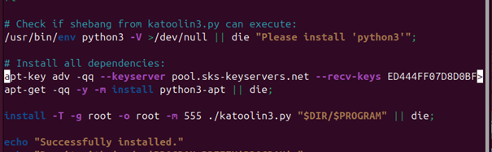

W tej instrukcji dowiesz się, jak zainstalować i skonfigurować wirtualną maszynę oraz dodać do niej wszystkie narzędzia Kali na dowolnej dystrybucji Linux. Za przykład w tej instrukcji posłuży nam dystrybucja Ubuntu.
Na początek należy wybrać dystrybucję, z której będziemy korzystać. Możliwości jest wiele; możemy zainstalować np. Ubuntu, Debian, openSUSE itp. Instalacja może się delikatnie różnić w zależności od dystrybucji.
UWAGA! Musisz przydzielić przynajmniej 40 GB pamięci dla maszyny wirtualnej.
Po wybraniu dystrybucji, z której będziesz korzystał, możemy przystąpić do właściwej instrukcji.
Pobieramy Ubuntu Desktop z oficjalnej strony: ubuntu.com
Następnie w VirtualBox tworzymy nową wirtualną maszynę i w opcji ISO Image wybieramy plik Ubuntu Desktop, który pobraliśmy z powyższego linku.
Uruchamiamy maszynę, a po przejściu przez proces instalacji otwieramy terminal i wpisujemy poniższe komendy:
Aktualizujemy system oraz pobieramy niezbędne narzędzia:
sudo apt update && sudo apt upgrade
Pobieramy narzędzie, które umożliwi pobrać repozytorium z GitHub:
sudo apt install git
Teraz możemy pobrać paczkę Katoolin3 na Pulpit:
git clone https://github.com/s-h-3-l-l/katoolin3
Przechodzimy do pobranego katalogu i nadajemy plikowi install.sh permisje wykonawczą EXECUTE:
cd katoolin
sudo chmod +x ./install.sh
Następne komendy musimy wykonać z pozimu root'a:
sudo su
wget -q -O - https://archive.kali.org/archive-key.asc | apt-key add
Otwieramy plik install.sh, a następnie musimy wykomentować linijkę, zaczynającą się na ‘apt-key’ przy pomocy ‘#’ na początku linii.
sudo nano install.sh
Przed:
Po:
Zapisujemy plik i wychodzimy z niego. (Ctrl + O, Ctrl + X)
Następnie uruchamiamy instalację install.sh:
./install.sh
Powinien się wyświetlić taki komunikat:
Przed uruchomieniem narzędzi Katoolin, musimy jeszcze zrobić jedną rzecz.
sudo nano ~/.bashrc
Po wejściu do edycji pliku, przechodzimy na sam koniec i wklejamy:
export PATH=$PATH:~/katoolin3:/usr/bin/python3
Zapisujemy i uruchamiamy Katoolin3:
katoolin3
Po uruchomieniu ukazuje nam się menu, z którego możemy wybrać co dokładnie chcemy zainstalować z reposytorium Kali, możemy też pobrać wszystko.
Nas interesują wszystkie narzędzia, więc wybieramy opcję „1” i przechodzimy do instalacji
Potwierdzamy "0"
Po ukończeniu pobierania, należy uruchomić maszynę ponownie. Możliwe, że będzie trzeba zresetować maszynę kilkukrotnie.
Po uruchomieniu i zalogowaniu się wpisując poniższą komendę, możemy zweryfikować, jakie narzędzia pobraliśmy z reposytorium Katoolin na swój komputer:
dpkg --list | grep kali